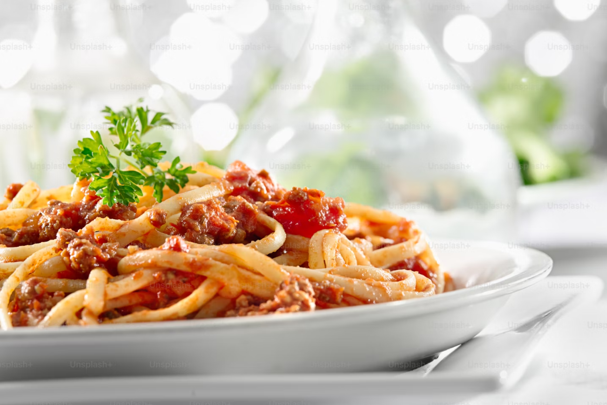
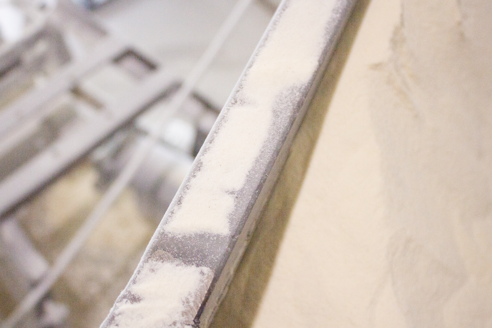
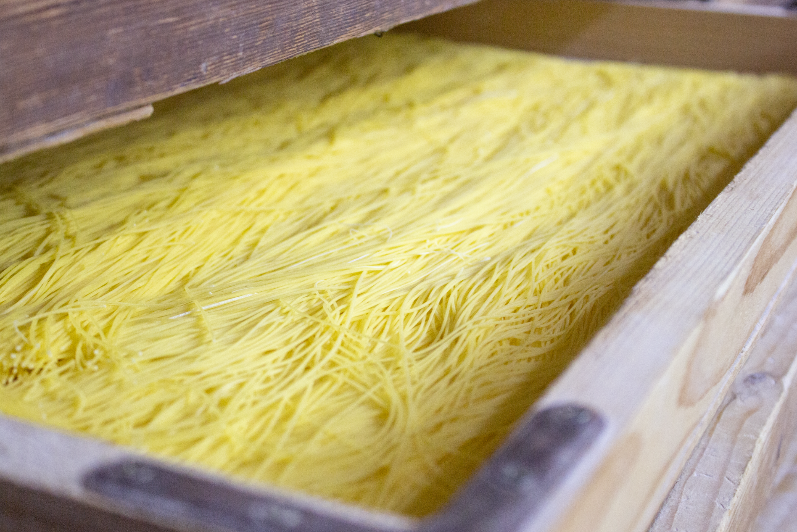

Паста карбонара – це класична італійська страва, яка поєднує в собі насичений смак бекону, вершковий соус та ніжні спагеті. Готується швидко і просто, але дарує вишукане гастрономічне задоволення.

Інгредієнти
Спагеті – 400 г
Бекон (панчетта або гуанчале) – 150 г
Яйця – 4 шт.
Із зерна в тарілку: секрети виробництва нашої пасти
В сучасному світі паста – це не просто продукт для швидкого приготування, а справжній символ
традиційної італійської кухні, який знайшов своє місце на столах усього світу. На макаронній
фабриці
«КОРОНА» ми ставимо перед собою завдання створювати не просто макарони, а продукт преміум-класу, який
відповідає найвищим стандартам якості. Як нам це вдається? Усе починається з першого кроку – якісного
зерна та закінчується тим, що ви бачите на своєму столі.
Замішування та формування пасти
Наша продукція починається з ретельно відібраного зерна. Ми використовуємо тільки високоякісну
тверду пшеницю, що є гарантією чудової текстури та відмінного смаку пасти. Це зерно має високий
вміст білка, що робить його ідеальним для створення макаронних виробів преміум-класу. Кожна партія
зерна проходить суворий контроль якості перед тим, як розпочинається процес виробництва.
Нумерований список
Нумерований список
Нумерований список


Замішування та формування пасти
Далі починається етап перетворення зерна на борошно. Наші технології дозволяють зберігати всі
корисні властивості пшениці, що є важливим для досягнення чудових органолептичних характеристик
нашої пасти. Мелення виконується з використанням сучасних методів, що гарантують стабільну якість
борошна для кожної партії продукції.
Ми на фабриці «КОРОНА» використовуємо тільки добірне зерно та сучасні технології, щоб
створювати пасту преміум-класу. Кожен етап виробництва, від відбору зерна до пакування,
спрямований на те, щоб ви отримали смачний і корисний продукт на свій стіл.
Замішування та формування пасти
Після цього борошно змішується з чистою водою, і ми отримуємо тісто. Потім тісто формують у різні
види макаронів — від спагеті до пенне. Кожен шматочок тіста проходить ретельний контроль, щоб бути
ідеальним.
Замішування та формування пасти
Після цього борошно змішується з чистою водою, і ми отримуємо тісто. Потім тісто формують у різні
види макаронів — від спагеті до пенне. Кожен шматочок тіста проходить ретельний контроль, щоб бути
ідеальним.
Після цього борошно змішується з чистою водою, і ми отримуємо тісто. Потім тісто формують у різні
види макаронів — від спагеті до пенне. Кожен шматочок тіста проходить ретельний контроль, щоб бути
ідеальним.
Залиште номер телефону та отримайте прайс-лист нашої пасти